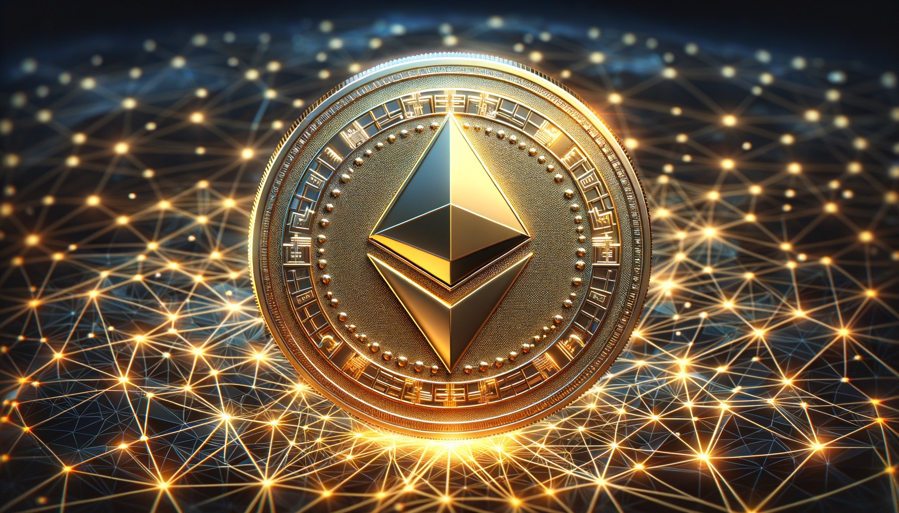
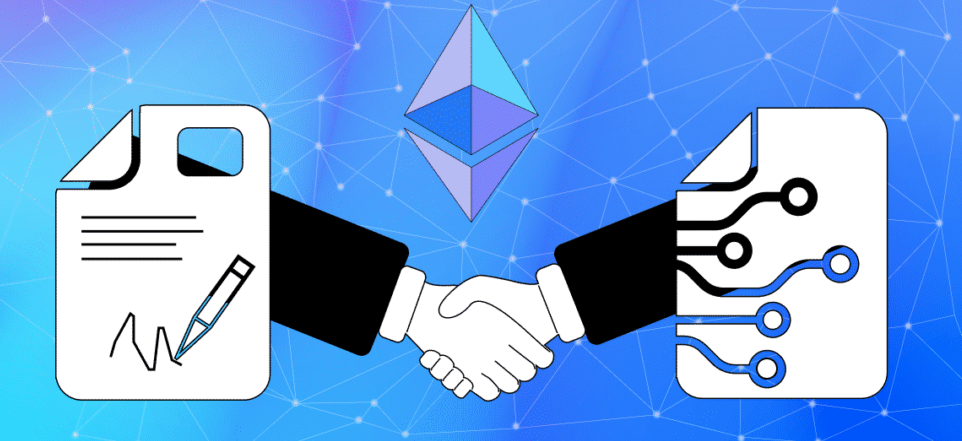
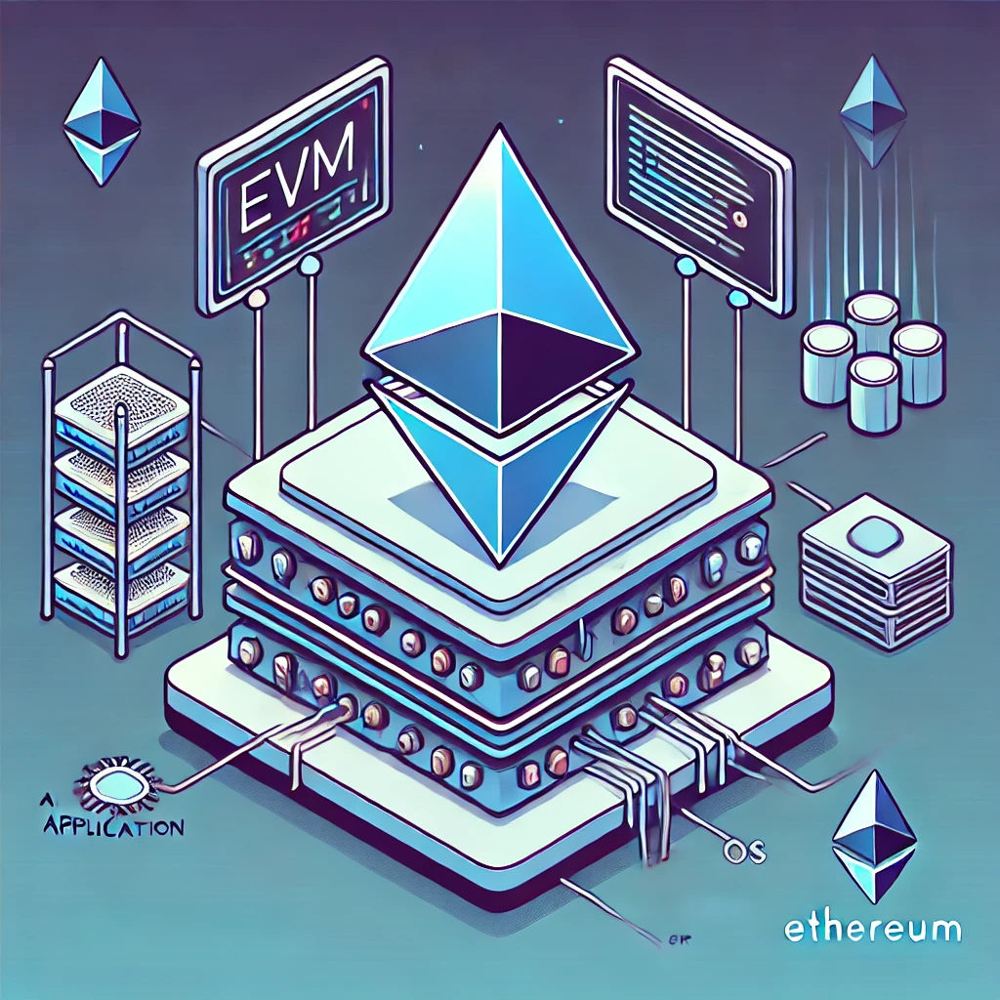

Todo sobre Ethereum
La BTC es chevere pero olvidemosnos de ella por un momento y dejame introducirte a la otra gran criptomoneda: Ether¿Por qué Ethereum?
Bitcoin fue diseñado para funcionar como oro digital (una reserva de valor e
intercambio), Ethereum fue creado para ser una computadora mundial programable.
En 2013, un joven crack programador llamado Vitalik Buterin se dio cuenta de que la red
de Bitcoin tenía un alcance limitado por diseño: solo permitía transferir valor de
un punto A a un punto B.
Vitalik propuso crear una red descentralizada sobre la
cual cualquiera pudiera programar aplicaciones complejas sin depender de un
servidor central ni de intermediarios (como bancos, notarías
o aseguradoras). Así nació la red Ethereum en 2015.
No hay que confundir Ethereum con Ether (ETH):
- Ethereum: Es la red de blockchain.
- Ether (ETH): Es la criptomoneda de la red Ethereum.

ETH es competencia de BTC?
La respuesta corta es NO son competencia directa. Aunque ambas son las criptomonedas más importantes del mercado, tienen propósitos completamente diferentes y fueron creadas para resolver problemas distintos.
- BTC: Es dinero digital.
Nació para ser un sistema monetario descentralizado. Su meta principal es ser una moneda global confiable. Por eso se le llama ORO DIGITAL.
- ETH: Es una computadora global.
Nació para ser una plataforma programable descentralizada. Su meta es permitir que personas creen aplicaciones sobre su red sin necesidad de servidores ni intermediarios centrales como Google Cloud o AWS (Amazon Web Services).
Por esa razón, ETH introduce algunos conceptos nuevos que no se ven en Bitcoin. Por ejemplo: Smart Contracts, dApps, DeFi, etc. Lo vamos a ir viendo uno por uno asi que no te preocupes.
Smart Contracts
Los smart contracts (contratos inteligentes) son programas informáticos almacenados
en la red de blockchain que se ejecutan cuando se cumplen ciertas cosas.
Es como un contrato normal en papel pero es mucho mejor ya que:
- Es autonomo: Se ejecuta por sí solo sin necesidad de un banco, abogado o notario.
- Es inmutable: Una vez desplegado un contrato en la red Ethereum, su código no se
puede modificar para nada.
- Es transparente: El código y las transacciones asociadas son públicos y verificables
por cualquiera en la blockchain.

¿Cómo funciona?
El Smart Contract se compone de un código escrito en un lenguaje de programación (el que se usa normalmente no es python, sino Solidity) y unos datos.
- La persona que lo desarrolla programa las reglas del contrato y lo publica en la red.
- Los usuarios envían una transacción al contrato para activar sus funciones (por ejemplo, enviar fondos o intercambiar un activo).
- Luego se ejecuta en la EVM que lo explico abajo
EVM (Ethereum Virtual Machine)
La EVM es el cerebro o motor de la red Ethereum.
Es el entorno en donde se procesan y ejecutan los smart contracts y las transacciones
de la red.
La blockchain de Bitcoin solo permitía transacciones simples (enviar y
recibir BTC). Ethereum nació con la idea de ser una computadora descentralizada
programable.
Para lograr que miles de computadoras (nodos) alrededor del mundo ejecuten
exactamente el mismo código y lleguen exactamente al mismo resultado, necesitaban
una "máquina virtual" estandarizada que corriera en cada nodo. Esa es la EVM.

Principales características:
1. Determinista: No importa si un nodo (computadora) es una Mac que está en Lima, o un windows en Arequipa. La EVM siempre producirá exactamente lo mismo.
2. Aislamiento: El código que corre dentro de la EVM esta complemetamente aislado de todo lo demás. Es decir, todo lo que pase dentro de la EVM (ej. un smart contract tiene un virus) no le pasa nada a tu nodo.
3. Es Turing completa: Esto significa que, conceptualmente, puede resolver cualquier problema computable o ejecutar cualquier algoritmo.
Hoy en día, la EVM no solo existe en Ethereum. Se ha convertido en el estándar de la industria cripto.
Muchas otras blockchains son compatibles con EVM.